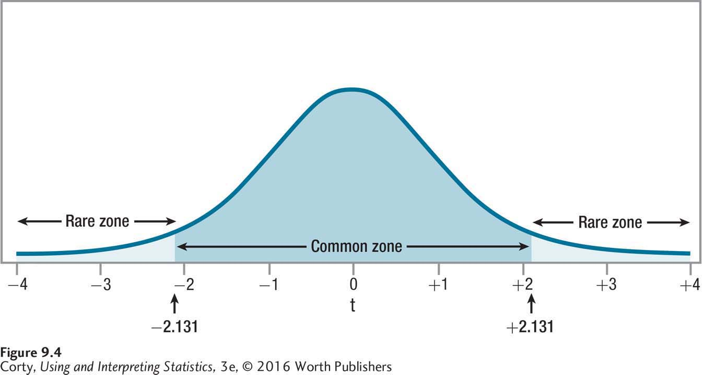

Figure 9.6: Figure 9.4 Critical Value of t, Two-Tailed, α = .05, df = 15 This is the sampling distribution of t for 15 degrees of freedom. Compare this to the sampling distribution of t in Figure 9.2, where df = 5. Note that this sampling distribution is more peaked, packed more closely around zero. As a result, tcv here, 2.131, is closer to zero, making the rare zone larger. When the rare zone is larger, which occurs when the sample size is larger, it is easier to reject the null hypothesis.